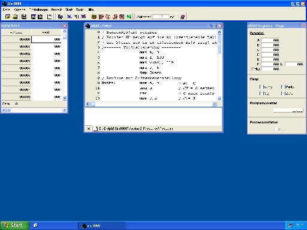
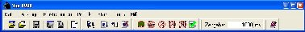
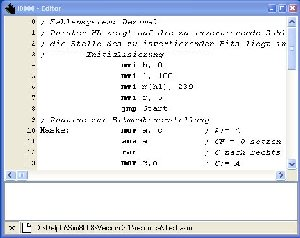
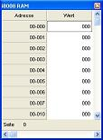
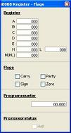
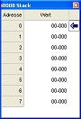
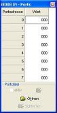
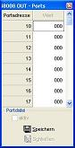
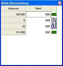
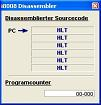

Diese Hilfe ist noch nicht vollständig und wird noch ergänzt!
- Programmbeschreibung
- Toolbar
- Menüerklärung
- Datei
- Anzeige
- Einstellungen
- Projekt
- Start
- Tools
- Hilfe
- Fenster
- Editor
- RAM
- Register/Flags
- Stack
- I/O Ports
- überwachte Ausdrücke
- Disassembler
- Zusatz
- Syntax
- Assemblerbefehle
- Zahlenangaben
- Befehlssatz des i8008
Versionshistorie:
Version 2.1 (06/23/2004)
|
- der Editor nutzt die SynEdit Komponente (http://synedit.sourceforge.net)
- verbesserte Darstellung im Einzellschritt und Kontrolle der Breakpoints
- das Zahlensystem "Dezimal (2er Komplement)" wurde hinzugefügt
|
Version 2.1.0.2 (06/22/2006)
|
- Bugfix im Syntaxhighlighting, es wurde der (alte) Befehl RS statt des (neuen) Befehls RM hervorgehoben
- Bugfix bei Multimonitorbetrieb
- Bugfix der Hilfe, es wurde der (alte) Befehl RS statt des (neuen) Befehls RM dokumentiert
|
Um ein besseres Verständniss für den Prozessor i8008, welcher in der Vorlesung
"Maschinenorientierte Programmierung" als Beispielprozessor genutzt wird, zu bekommen, wurde dieses
Programm entwickelt.
Mein Anliegen war, einen Simulator zu schreiben der in der Lage sein sollte
den Code als Quelltext entgegenzunehmen und selbständig in Bytecode zu übersetzen.
Damit ist es einfacher geworden indirekte Sprungmarken zu setzten, ohne ihre genaue Adresse zu wissen.
Der im RAM befindliche Code lässt sich als Routine oder als Einzelschritt ausführen.
Der Simulator besitzt ebenso einen direkten RAM, Flag und Register Zugriff.
zurück zum Anfang

Die häufig genutzten Funktionen sind in dieser Toolbar für den Schnellzugriff angeordnet.
zurück zum Anfang
- Neu
- Projekt
Erstellt ein neues Projekt, dabei werden folgende Werte gespeichert:
- Stack
- RAM
- Register
- Flags
- I/O Ports
- Quelltext
- Quelltext
Es wird ein neuer Quelltext erstellt.
zurück zum Anfang
- Speichern
Es wird die aktuelle Datei gespeichert, entweder das Projekt oder nur der Quelltext.
zurück zum Anfang
- Quelltext öffnen...
Es wird ein Dialog zur Auswahl eines Quelltextes geöffnet.
zurück zum Anfang
- Quelltext speichern unter...
Es wird ein Dialog zur Eingabe der Quelltextdatei geöffnet.
zurück zum Anfang
- Projekt öffnen
Es wird ein Dialog zur Auswahl eines Projektes geöffnet.
zurück zum Anfang
- Projekt speichern unter...
Es wird ein Dialog zur Eingabe der Projektdatei geöffnet.
zurück zum Anfang
- Drucken...
Es wird ein Dialog zur Eingabe der Druckoptionen geöffnet.
zurück zum Anfang
- Beenden
Das Programm wird beendet. Dies ist nur möglich, wenn das Programm nicht im Ausführungsmodus ist.
zurück zum Anfang
- Zahlensystem
- Oktal
Das Anzeigeformat für Zahlen ist Oktal.
- Dezimal
Das Anzeigeformat für Zahlen ist Dezimal.
- Dezimal (2er Komplement)
Das Anzeigeformat für Zahlen ist im 2er Komplement für die RAM Anzeige und die Register A-E, alle anderen Anzeigen sind Dezimal.
- Hexadezimal
Das Anzeigeformat für Zahlen ist Hexadezimal.
- Binär
Das Anzeigeformat für Zahlen ist Binär.
zurück zum Anfang
- High/Low getrennt
Die Ansicht der Zahlen (größer 8 Bit) werden in High und Lowteil angezeigt.
zurück zum Anfang
- Assemblerfortschritt
Der Assemblerfortschritt kann ein- oder ausgeblendet werde.
zurück zum Anfang
- Registry nutzen
Wenn die Registry genutzt wird, werden die letzten Einstellungen beim Programmstart geladen.
zurück zum Anfang
- Start
Die Ausführung des Quelltextes wird gestartet. Ist ein Breakpoint erreicht, wird die Ausführung gestoppt.
zurück zum Anfang
- Einzelschritt
Die Anweisungen des Quelltextes werden Zeile für Zeile abgearbeitet.
zurück zum Anfang
- Stop
Das Programm wird in den Editiermodus zurückgesetzt.
zurück zum Anfang

Im Editor wird der Quelltext eingegeben und bearbeitet. Sollten Fehler beim Assemblieren auftreten, so werden diese in einer Liste aufgeführt.
Die Auswahl eines Fehlers bewegt den Textcursor zu der fehlerhaften Zeile.
Auf der Anzeige der Zeilennummer können die Breakpoints einer Zeile mit einem Mausklick ein- bzw. ausgeschaltet werden.
zurück zum Anfang

zurück zum Anfang

zurück zum Anfang
Die Implementation des Programcounter (PC) weicht von dem originalen Model ab!

zurück zum Anfang


zurück zum Anfang

zurück zum Anfang

zurück zum Anfang
- Es erfolgt keine Unterscheidung in Groß- und Kleinschreibung bei den Befehlen.
- In einer Zeile darf nur ein Befehl stehen.
- Sprunkmarken sind wie folgt anzugeben:
Marke: Befehl
- Eine Sprungmarke darf nur Ziffern und Zeichen aus dem Alphabet besitzen, wobei das erste Zeichen keine Ziffer sein darf.
- Kommentare werden mit vorangestelltem Semikolon gekennzeichnet und enden mit der Zeile.
zurück zum Anfang
- Bezeichner
equ Zahl
weist einem Bezeichner die entsprechende Zahl zu
Beispiel: ZAHL equ 15
org RAM Zeile
organisiert beim Assemblieren den Maschinencode an die angegebene RAM Zeile
Beispiel: org hFFend
schließt den Quelltext ab, alle folgenden Zeichen werden ignoriert
zurück zum Anfang
- Dezimal:
.[0..9]+
- Oktal:
(O|Q)[0..7]+
- Hexadezimal:
H[0..9,A-F]+
- Binär:
B[0-1]+
zurück zum Anfang
- Kopierbefehle
MOV r, s
- kopiert den Inhalt von Register s in das Register r
Register[r]:= Register[s]- Kodierung (Oktal): 3 r s, 1 Byte Befehl
zurück zum Anfang
MVI r, n
- kopiert das Datum n in das Register r
Register[r]:= n- Kodierung (Oktal): 0 r 6,- n -, 2 Byte Befehl
zurück zum Anfang
- Inkrement/Dekrement
INR r
- erhöht den Inhalt des Registers r um eins
A:= A + 1- Kodierung (Oktal): 0 r 0, 1 Byte Befehl
zurück zum Anfang
DCR r
- erniedrigt den Inhalt des Registers r um eins
A:= A - 1- Kodierung (Oktal): 0 r 1, 1 Byte Befehl
zurück zum Anfang
- arithmetische Befehle
ADD r
- addiert zu dem Akkumulator den Inhalt des Registers r
A:= A + Register[r]- Kodierung (Oktal): 2 0 r, 1 Byte Befehl
zurück zum Anfang
ADC r
- addiert zu dem Akkumulator den Inhalt des Registers r und den Inhalt vom Carry Flag
A:= A + Register[r] + CF- Kodierung (Oktal): 2 1 r, 1 Byte Befehl
zurück zum Anfang
SUB r
- subtrahiert vom Akkumulator den Inhalt des Registers r
A:= A - Register[r]- Kodierung (Oktal): 2 2 r, 1 Byte Befehl
zurück zum Anfang
SBB r
- subtrahiert vom Akkumulator den Inhalt des Registers r und den Inhalt vom Carry Flag
A:= A - Register[r] - CF- Kodierung (Oktal): 2 3 r, 1 Byte Befehl
zurück zum Anfang
ADI n
- addiert zu dem Akkumulator die Zahl n
A:= A + n- Kodierung (Oktal): 0 0 4, - n -, 2 Byte Befehl
zurück zum Anfang
ACI n
- addiert zu dem Akkumulator die Zahl n und den Inhalt vom Carry Flag
A:= A + n + CF- Kodierung (Oktal): 0 1 4, - n -, 2 Byte Befehl
zurück zum Anfang
SUI n
- subtrahiert vom Akkumulator die Zahl n
A:= A - n- Kodierung (Oktal): 0 2 4, - n -, 2 Byte Befehl
zurück zum Anfang
SBI n
- subtrahiert vom Akkumulator die Zahl n und den Inhalt vom Carry Flag
A:= A - n - CF- Kodierung (Oktal): 0 3 4, - n -, 2 Byte Befehl
zurück zum Anfang
- bitweise logische Befehle
ANA r
- bitweise und Verknüpfung des Akkumulator und dem Inhalt des Registers r
A:= A and Register[r]- Kodierung (Oktal): 2 4 r, 1 Byte Befehl
zurück zum Anfang
XRA r
- bitweise exclusiv oder Verknüpfung des Akkumulator und dem Inhalt des Registers r
A:= A xor Register[r]- Kodierung (Oktal): 2 5 r, 1 Byte Befehl
zurück zum Anfang
ORA r
- bitweises oder Verknüpfung des Akkumulator und dem Inhalt des Registers r
A:= A or Register[r]- Kodierung (Oktal): 2 6 r, 1 Byte Befehl
zurück zum Anfang
CMP r
- subtrahiert vom Akkumulator den Inhalt des Registers r und setzt die Flags
A - Register[r]- Kodierung (Oktal): 2 7 r, 1 Byte Befehl
zurück zum Anfang
ANI n
- bitweise und Verknüpfung des Akkumulator und der Zahl n
A:= A and n- Kodierung (Oktal): 0 4 4, - n -, 2 Byte Befehl
zurück zum Anfang
XRI n
- bitweise exclusiv oder Verknüpfung des Akkumulator und der Zahl n
A:= A xor n- Kodierung (Oktal): 0 5 4, - n -, 2 Byte Befehl
zurück zum Anfang
ORI r
- bitweises oder Verknüpfung des Akkumulator und der Zahl n
A:= A or n- Kodierung (Oktal): 0 6 4, - n -, 2 Byte Befehl
zurück zum Anfang
CPI n
- subtrahiert vom Akkumulator die Zahl n und setzt die Flags
A - n- Kodierung (Oktal): 0 7 4, - n -, 2 Byte Befehl
zurück zum Anfang
- Sprungbefehle
JMP nn
- unbedingter Sprung auf Adresse nn
- Kodierung (Oktal): 1 x 4, - n - , - n -, 3 Byte Befehl
zurück zum Anfang
JNC nn
- bedingter Sprung, CF = 0, auf Adresse nn
- Kodierung (Oktal): 1 0 0, - n -, - n -, 3 Byte Befehl
zurück zum Anfang
JNZ nn
- bedingter Sprung, ZF = 0, auf Adresse nn
- Kodierung (Oktal): 1 1 0, - n -, - n -, 3 Byte Befehl
zurück zum Anfang
JP nn
- bedingter Sprung, SF = 0, auf Adresse nn
- Kodierung (Oktal): 1 2 0, - n -, - n -, 3 Byte Befehl
zurück zum Anfang
JPO nn
- bedingter Sprung, PF = 0, auf Adresse nn
- Kodierung (Oktal): 1 3 0, - n -, - n -, 3 Byte Befehl
zurück zum Anfang
JC nn
- bedingter Sprung, CF = 1, auf Adresse nn
- Kodierung (Oktal): 1 4 0, - n -, - n -, 3 Byte Befehl
zurück zum Anfang
JZ nn
- bedingter Sprung, ZF = 1, auf Adresse nn
- Kodierung (Oktal): 1 5 0, - n -, - n -, 3 Byte Befehl
zurück zum Anfang
JM nn
- bedingter Sprung, SF = 1, auf Adresse nn
- Kodierung (Oktal): 1 6 0, - n -, - n -, 3 Byte Befehl
zurück zum Anfang
JPE nn
- bedingter Sprung, PF = 1, auf Adresse nn
- Kodierung (Oktal): 1 7 0, - n -, - n -, 3 Byte Befehl
zurück zum Anfang
- Aufruf- und Rückkehrbefehle
CALL nn
- PC speichern in Stack, erhöhen des Stackpointer, PC auf Adresse nn
- Kodierung (Oktal): 1 x 6, - n -, - n -, 3 Byte Befehl
zurück zum Anfang
CNC nn
- PC speichern in Stack, erhöhen des Stackpointer, PC auf Adresse nn, CF = 0
- Kodierung (Oktal): 1 0 2,-n- , -n-, 3 Byte Befehl
zurück zum Anfang
CNZ nn
- PC speichern in Stack, erhöhen des Stackpointer, PC auf Adresse nn, ZF = 0
- Kodierung (Oktal): 1 1 2, - n -, - n -, 3 Byte Befehl
zurück zum Anfang
CP nn
- PC speichern in Stack, erhöhen des Stackpointer, PC auf Adresse nn, SF = 0
- Kodierung (Oktal): 1 2 2, - n -, - n -, 3 Byte Befehl
zurück zum Anfang
CPO nn
- PC speichern in Stack, erhöhen des Stackpointer, PC auf Adresse nn, PF = 0
- Kodierung (Oktal): 1 3 2, - n -, - n -, 3 Byte Befehl
zurück zum Anfang
CC nn
- PC speichern in Stack, erhöhen des Stackpointer, PC auf Adresse nn, CF = 1
- Kodierung (Oktal): 1 4 2, - n -, - n -, 3 Byte Befehl
zurück zum Anfang
CZ nn
- PC speichern in Stack, erhöhen des Stackpointer, PC auf Adresse nn, ZF = 1
- Kodierung (Oktal): 1 5 2, - n -, - n -, 3 Byte Befehl
zurück zum Anfang
CM nn
- PC speichern in Stack, erhöhen des Stackpointer, PC auf Adresse nn, SF = 1
- Kodierung (Oktal): 1 6 2, - n -, - n -, 3 Byte Befehl
zurück zum Anfang
CPE nn
- PC speichern in Stack, erhöhen des Stackpointer, PC auf Adresse nn, PF = 1
- Kodierung (Oktal): 1 7 2, - n -, - n -, 3 Byte Befehl
zurück zum Anfang
RST 0
- entspricht CALL 0 (oktal)
- Kodierung (Oktal): 0 0 5, 1 Byte Befehl
zurück zum Anfang
RST 10
- entspricht CALL 10 (oktal)
- Kodierung (Oktal): 0 1 5, 1 Byte Befehl
zurück zum Anfang
RST 20
- entspricht CALL 20 (oktal)
- Kodierung (Oktal): 0 2 5, 1 Byte Befehl
zurück zum Anfang
RST 30
- entspricht CALL 30 (oktal)
- Kodierung (Oktal): 0 3 5, 1 Byte Befehl
zurück zum Anfang
RST 40
- entspricht CALL 40 (oktal)
- Kodierung (Oktal): 0 4 5, 1 Byte Befehl
zurück zum Anfang
RST 50
- entspricht CALL 50 (oktal)
- Kodierung (Oktal): 0 5 5, 1 Byte Befehl
zurück zum Anfang
RST 60
- entspricht CALL 60 (oktal)
- Kodierung (Oktal): 0 6 5, 1 Byte Befehl
zurück zum Anfang
RST 70
- entspricht CALL 70 (oktal)
- Kodierung (Oktal): 0 7 5, 1 Byte Befehl
zurück zum Anfang
RET
- Adresse aus Stack in PC kopieren (Rücksprung aus Unterprogramm), erniedrigen des Stackpointer
- Kodierung (Oktal): 0 x 7, 1 Byte Befehl
zurück zum Anfang
RNC
- Adresse aus Stack in PC kopieren (Rücksprung aus Unterprogramm), erniedrigen des Stackpointer, CF = 0
- Kodierung (Oktal): 0 0 3, 1 Byte Befehl
zurück zum Anfang
RNZ
- Adresse aus Stack in PC kopieren (Rücksprung aus Unterprogramm), erniedrigen des Stackpointer, ZF = 0
- Kodierung (Oktal): 0 1 3, 1 Byte Befehl
zurück zum Anfang
RP
- Adresse aus Stack in PC kopieren (Rücksprung aus Unterprogramm), erniedrigen des Stackpointer, SF = 0
- Kodierung (Oktal): 0 2 3, 1 Byte Befehl
zurück zum Anfang
RPO
- Adresse aus Stack in PC kopieren (Rücksprung aus Unterprogramm), erniedrigen des Stackpointer, PF = 0
- Kodierung (Oktal): 0 3 3, 1 Byte Befehl
zurück zum Anfang
RC
- Adresse aus Stack in PC kopieren (Rücksprung aus Unterprogramm), erniedrigen des Stackpointer, CF = 1
- Kodierung (Oktal): 0 4 3, 1 Byte Befehl
zurück zum Anfang
RZ
- Adresse aus Stack in PC kopieren (Rücksprung aus Unterprogramm), erniedrigen des Stackpointer, ZF = 1
- Kodierung (Oktal): 0 5 3, 1 Byte Befehl
zurück zum Anfang
RM
- Adresse aus Stack in PC kopieren (Rücksprung aus Unterprogramm), erniedrigen des Stackpointer, SF = 1
- Kodierung (Oktal): 0 6 3, 1 Byte Befehl
zurück zum Anfang
RPE
- Adresse aus Stack in PC kopieren (Rücksprung aus Unterprogramm), erniedrigen des Stackpointer, PF = 1
- Kodierung (Oktal): 0 7 3, 1 Byte Befehl
zurück zum Anfang
- Rotationsbefehle
RLC
- logische Rotation nach links, Bit 7 CF, Bit 7 Bit 0
- Kodierung (Oktal): 0 0 2, 1 Byte Befehl
zurück zum Anfang
RRC
- logische Rotation nach rechts, Bit 0 CF, Bit 0 Bit 7
- Kodierung (Oktal): 0 1 2, 1 Byte Befehl
zurück zum Anfang
RAL
- arithmetische Rotation nach links, Bit 7 CF Bit 0
- Kodierung (Oktal): 0 2 2, 1 Byte Befehl
zurück zum Anfang
RAR
- arithmetische Rotation nach rechts, Bit 0 CF Bit 7
- Kodierung (Oktal): 0 3 2, 1 Byte Befehl
zurück zum Anfang
- Ein- und Ausgabebefehle
sind nicht 1:1 umgesetzt!
IN <X>, X = 0..7
- kopiert den Inhalt des Port <X> in das Register A
A:= Port[X]- Kodierung (Oktal): 1 x x, x x (oktal) = Port*2+1, 1 Byte Befehl
zurück zum Anfang
OUT <X>, X = 8..31
- kopiert den Inhalt des Register A nach Port <X>
Port[X]:= A- Kodierung (Oktal): 1 x x, x x (oktal) = Port*2+1, 1 Byte Befehl
zurück zum Anfang